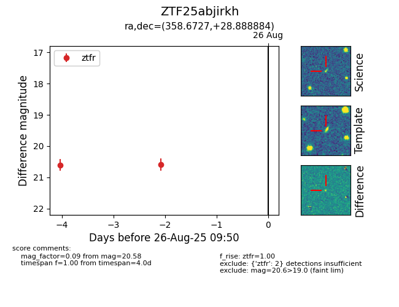

Target ZTF25abjirkh at 2025-08-26 10:32, see:
FINK: fink-portal.org/ZTF25abjirkh
Lasair: lasair-ztf.lsst.ac.uk/objects/ZTF25abjirkh
ALeRCE: alerce.online/object/ZTF25abjirkh
alt names
ZTF25abjirkh (ztf,fink)
coordinates:
equatorial (ra, dec) = (358.6727,+28.88888)
galactic (l, b) = (108.2161,-32.35611)
photometry
last ztfr=20.58
2 ztfr detections
